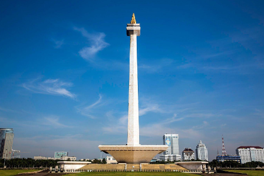

Video Penjelasan
MONAS
Monumen Nasional, atau yang lebih dikenal dengan sebutan Monas, adalah ikon kebanggaan Indonesia yang terletak di pusat Jakarta. Dibangun pada tahun 1961, Monas didirikan sebagai simbol perjuangan rakyat Indonesia untuk meraih kemerdekaan. Monumen ini memiliki tinggi 132 meter dengan puncaknya yang dihiasi oleh lidah api berlapis emas, melambangkan semangat perjuangan yang tak pernah padam. Di bagian dalam Monas, terdapat Museum Sejarah Nasional yang menyimpan diorama-diorama yang menggambarkan perjalanan bangsa Indonesia dari masa prasejarah hingga era kemerdekaan. Selain itu, pengunjung juga dapat naik ke pelataran puncak Monas menggunakan lift untuk menikmati pemandangan Kota Jakarta dari ketinggian. Area di sekitar Monas juga sangat menarik untuk dijelajahi, terutama Taman Medan Merdeka yang luas dan asri, sering digunakan sebagai tempat rekreasi, olahraga, dan berbagai kegiatan budaya.
